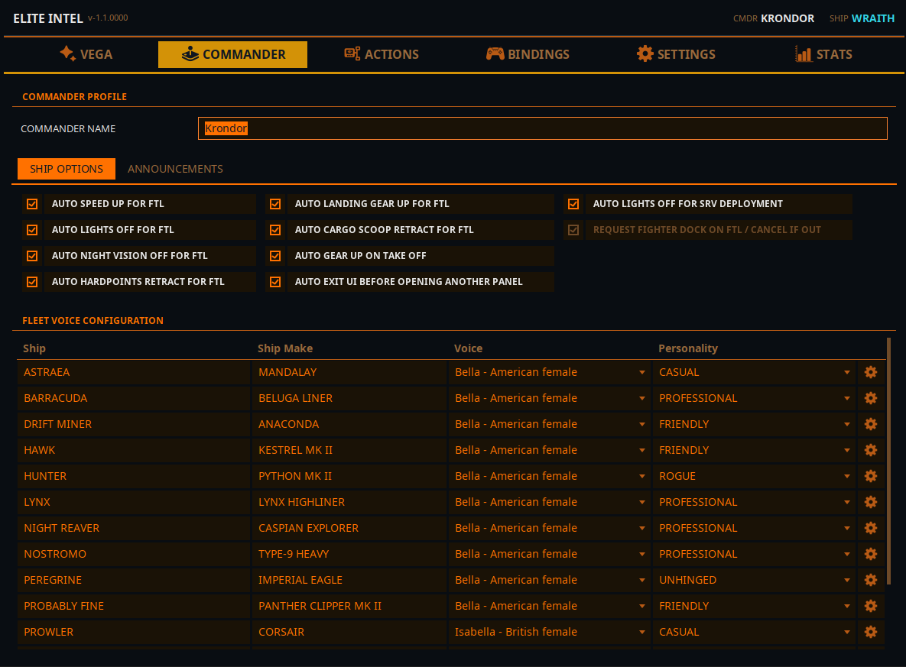
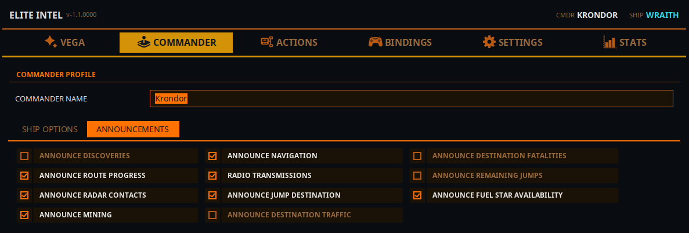
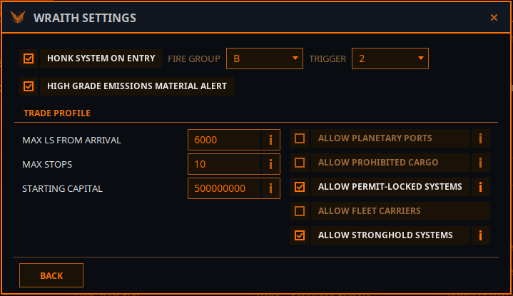

Pestaña Comandante
 Quién eres, qué hace
tu nave por ti automáticamente, de qué te avisa Vega sin que se lo pidas y con qué voz habla cada
casco de tu flota.
Quién eres, qué hace
tu nave por ti automáticamente, de qué te avisa Vega sin que se lo pidas y con qué voz habla cada
casco de tu flota.

Perfil del comandante
Nombre del comandante: sustituye tu nombre en el juego a efectos de voz. Úsalo si Vega destroza tu alias, o si sencillamente quieres que te llamen de otra forma. Se guarda al pulsar Enter o al hacer clic fuera.
La carpeta del diario se trasladó a Ajustes → Común en V1.1, y la carpeta de asignaciones se trasladó a la pestaña Bindings.
Opciones de nave
Automatizaciones que Vega ejecuta en tu nombre. Cada una es un simple interruptor que se escribe de inmediato. Útiles para cualquiera, y genuinamente habilitadoras para comandantes con discapacidad.
| Interruptor | Qué hace |
|---|---|
| Acelerar automáticamente para FTL | Da gas antes de un salto |
| Apagar luces automáticamente para FTL | Apaga las luces de la nave antes de un salto |
| Desactivar visión nocturna automáticamente para FTL | Quita la visión nocturna antes de un salto |
| Retraer anclajes automáticamente para FTL | Retrae los anclajes antes de un salto |
| Subir tren de aterrizaje automáticamente para FTL | Sube el tren antes de un salto |
| Retraer cargo scoop automáticamente para FTL | Retrae el recolector antes de un salto |
| Subir tren automáticamente al despegar | Sube el tren tras despegar |
| Salir automáticamente de la IU antes de abrir otro panel | Cierra el panel abierto antes de abrir el siguiente, para que los comandos de panel no choquen |
| Apagar luces automáticamente al desplegar SRV | Apaga las luces cuando despliegas el SRV |
| Solicitar atraque del fighter en FTL / cancelar si está fuera | Desactivado por ahora: a la espera de una corrección de Frontier para un fallo relacionado con el Nomad |
Anuncios
Todo lo que Vega dice por iniciativa propia. Los once interruptores viven ahora en un solo sitio, así que hay una única pantalla que revisar cuando algo habla demasiado, o demasiado poco.

| Interruptor | Qué oyes |
|---|---|
| Anunciar descubrimientos | Cuerpos notables, primeros descubrimientos, señales biológicas |
| Anunciar progreso de ruta | Por dónde vas en una ruta trazada |
| Anunciar contactos de radar | Naves que aparecen en el escáner |
| Anunciar minería | Eventos de minería y rendimientos |
| Anunciar navegación | Eventos de navegación y llegadas |
| Transmisiones de radio | Charla de radio en personaje, dicha con una voz de radio distinta |
| Anunciar el destino del salto | Cuál es el siguiente sistema |
| Anunciar el tráfico del destino | Informes de tráfico de adonde te diriges |
| Anunciar las bajas del destino | Muertes recientes en el sistema de destino |
| Anunciar los saltos restantes | Saltos que quedan en la ruta |
| Anunciar disponibilidad de estrella de combustible | Si el destino tiene una estrella recolectable |
Los seis primeros también se pueden conmutar por voz, así que esta pantalla los vuelve a leer cada
vez que abres la pestaña: un toggle all announcements hablado se reflejará aquí.
Configuración de voces de la flota
Una fila por cada nave que posees. Elite Intel descubre tu flota a partir del diario del juego; no añades naves a mano.
| Columna | Notas |
|---|---|
| Nave | El nombre que le has puesto a tu nave |
| Modelo de nave | El tipo de casco |
| Voz | Haz clic para elegir. Cambiarla reproduce al instante una línea de demostración con esa voz para que puedas juzgarla |
| Personalidad | Profesional · Casual · Amigable · Desquiciado · Rebelde |
| ⚙ | Abre los ajustes de esa nave |
Sobre la lista de voces. Las voces de nave son femeninas. Qué voces aparecen depende del motor de voz seleccionado en Ajustes → Servicios de IA:
- Local (Kokoro): 53 voces, etiquetadas como
Nombre - acento. Sin clave, sin descarga, sin configuración. - Nube (Google): etiquetadas como
Nombre - acento · HDo· Standard. En inglés el acento distingue las voces. En cualquier otro idioma cada voz se sintetiza en ese idioma, así que la etiqueta muestra el género y el nivel de calidad en lugar de un acento inglés engañoso.
Cambiar el motor de voz restablece la voz de cada nave al valor por defecto del nuevo motor. Las personalidades de tus naves se conservan. La aplicación te avisa antes de hacerlo.
Ajustes de nave (el botón ⚙)
Ajustes por nave, porque una Python minera y una Corvette de combate no quieren el mismo comportamiento.

Hacer honk del sistema al entrar: realiza un escaneo de descubrimiento al llegar a un sistema. Elige el Grupo de fuego (A–H) y el Disparador (1 o 2) en el que tienes montado el escáner de descubrimiento. Si tu HUD está en modo Combate, Elite Intel cambia a Análisis, escanea y vuelve a cambiar.
Aviso de materiales en emisiones de alto grado: te avisa cuando una señal de Emisiones de Alto Grado del sistema lleva materiales por los que merece la pena parar.
Perfil comercial: las restricciones que Elite Intel respeta cuando traza una ruta comercial para esta nave. Todas ellas se pueden fijar también por voz: "alter trade profile, set max stops to four".
| Ajuste | Significado |
|---|---|
| Permitir puertos planetarios | Incluir puertos de superficie en las rutas |
| Permitir carga prohibida | Incluir carga que sea ilegal en algún punto de la ruta |
| Permitir sistemas bloqueados por permiso | Incluir sistemas que requieren permiso |
| Permitir Fleet Carriers | Incluir portanaves de jugadores como mercados |
| Permitir sistemas Stronghold | Incluir sistemas bastión thargoides o de poderes |
| Máx. Ls desde la llegada | A qué distancia de la estrella de llegada puede estar una estación |
| Máx. paradas | Número de tramos de la ruta |
| Capital inicial | Créditos que el planificador de rutas puede gastar |
Consulta Comercio y beneficio para saber cómo se vuelan las rutas.
Community 👉Matrix👈